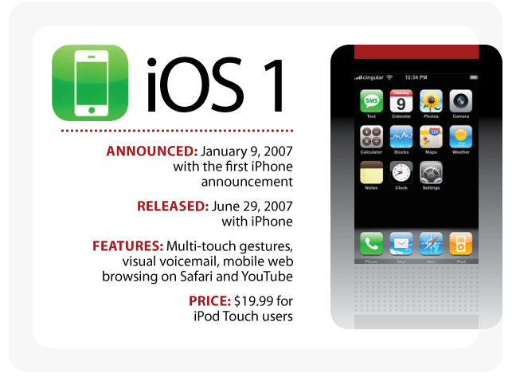
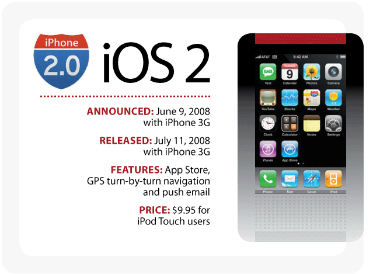
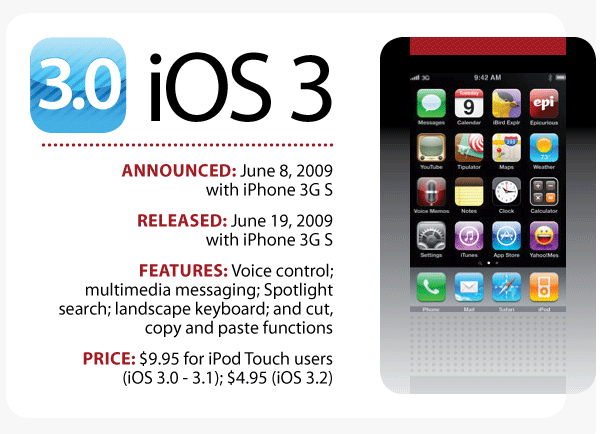
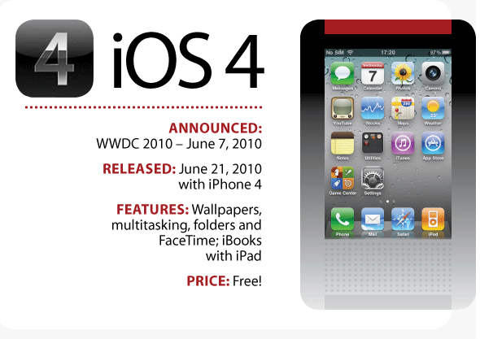
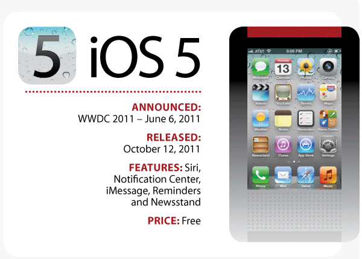
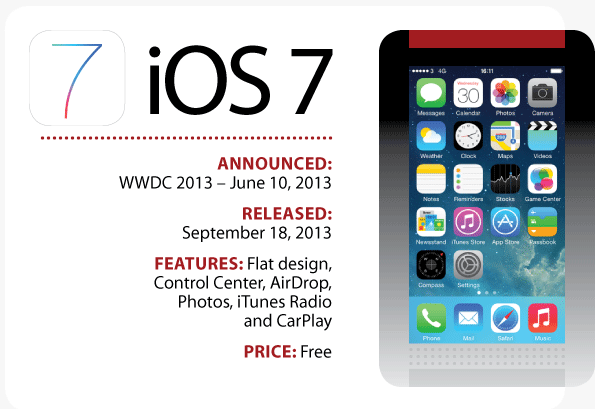
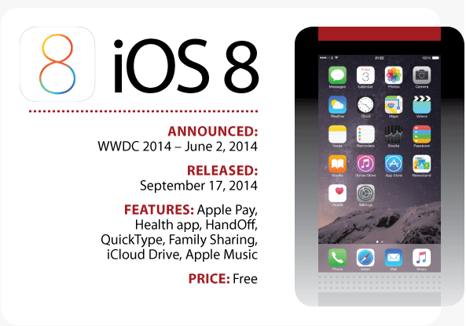
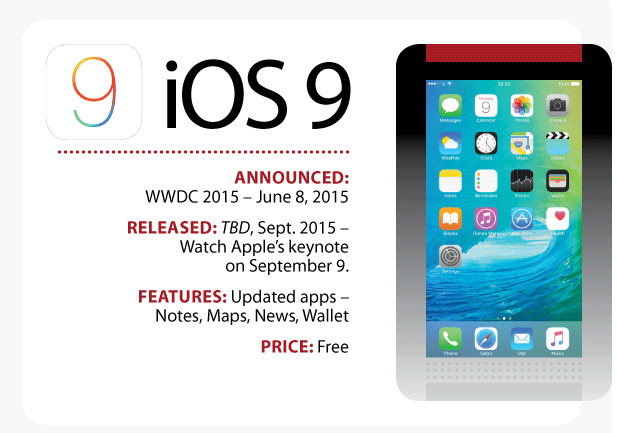

电脑需要操作系统，手机也需要，2007 年，苹果带着旗下第一款智能手机 iPhone 和第一款操作系统亮相，从而奠定了改变世界的基础。
8 年时间以来，iPhone 一直在不停的进化、演变，iOS 操作系统也是一样。iOS中包含许多实用的功能，其中很多功能用户已经无法离开，比如 iMessage、App Store、FaceTime、Siri、iCloud 以及 Apple Pay 等。

iOS 9 操作系统将于几天后正式发布，今天，我们回头看看 iOS 操作系统的进化史，看它如何成就了 iPhone、iPad 以及 iPod Touch 等设备。
iOS 1

苹果第一款操作系统 iOS 1 于 2007 年 9 月伴随着第一代iPhone到来。当时 OS（操作系统）这个词并未被广泛使用，因此乔布斯管它叫"软件"，表示它是 OS X 软件的桌面版本。
第一代 iOS 操作系统就已经拥有多点触控手势、虚拟语音邮件、在Safari上移动网络浏览、观看 Youtube 视频等功能。
2008 年 1 月份，添加一个支持定制的主屏，允许用户将应用转移到设备的专有页面上，此外还为 iPod Touch 用户添加新应用：邮件、地图、天气、笔记以及股票等。
iPhone 用户可以免费升级，iPod Touch 用户则需要支付 19.99 美元。
iOS 2

2008 年 3 月 6 日，苹果发布 iPhone SDK，并正式将这一操作系统命名为 iPhone OS。iOS 2 正式发布时间是 6 月 9 日，开放下载时间是 7 月 11 日。
iOS 2 伴随着 iPhone 3G 手机面世，添加了App Store、GPS 导航功能以及邮件推送功能。iPhone用户可免费更新，iPod Touch 用户升级需要 9.95 美元。
iOS 3

iOS 3 操作系统与 iPhone 3GS 一起于 2009 年 6 月 8 日发布，2009 年 6 月 19 日 iPhone 3GS 正式发售。
iOS 3 在前两代的基础上添加了许多新功能：语音操控、多媒体信息、 Spotlight 搜索、横向键盘、添加了剪切、复制和粘贴功能。
2010 年 3 月，苹果发布 iPad 之后，这才正式将 iPhone OS 的名字改成了现在通用的 iOS。
iPhone 用户可免费升级到 iOS 3 系统，iPod Touch 用户还是得花费 9.95 美元才能更新，后为激励用户，苹果推出了 4.95 美元升级 iOS 3.2 系统的策略。
iOS 4

iPhone 4 和 iPad 2 都是预装 iOS 4 操作系统，新系统加入了壁纸、多任务、文件夹以及Facetime 功能，此外还有 iBooks for iPad。
这一次，iPod Touch用户终于不用花钱升级系统了。iPhone 4 也成为了苹果第一款支持 CDMA网络的手机。
iOS 5

iOS 5 预装在 iPhone 4s 上，引入看 Siri、通知中心、iMessage、提醒以及 Newsstand。此外，还添加了 iCloud 和 Twitter 社交网络。
iOS 5 新增的 PC Free 功能使 iOS 5 设备不需要连接电脑就能激活，此外也可以使 iOS 设备通过无线局域网和电脑的 iTunes 进行同步。
而 iCloud 云服务是 iOS 5 最大的卖点之一。用户可以通过 iCloud 备份自己设备上的各类数据，并可以通过此功能查找自己的 iOS 设备以及朋友的大概位置。
iOS 6
iPhone 5 和 iPad mini 预装 iOS 6 操作系统上市，内置谷歌地图和Youtube应用，在此之前，用户需要手动从 App Store 下载。
iOS 5还内置了苹果自家地图服务，加入了turn-by-turn 导航功能，车辆需要拐弯时进行语音提醒的导航服务，集成 Facebook、Passbook ，支持LTE网络。
支持 Passbook 是一个非常便利的功能，你的登机牌、电影票、购物优惠券、会员卡及更多票券，现都归整到 passbook 里面。
iPhone 和 iPod touch 全新的全景模式，只需一个简单的动作，就可以拍摄 270 度的全景照片。
iOS 7

iOS 6 的苹果地图发布后，用户大喊，这是一个灾难。苹果时任设计高级副总裁（现任首席设计官）重新设计整个 iOS 系统。将我们从一个拟物时代直接快进到了现在的扁平化时代。
相比以往的操作系统，iOS 7 更加简洁、扁平和轻，相比拟物设计，新的风格大大减轻了用户的视觉压力。
iOS 7 除了扁平化设计之外，还添加了通知中心、AirDrop、iTunes Radio 以及 CarPlay 等功能，相册应用得到优化。
iOS 7 预装在 iPhone 5s、5c、iPad Air、iPad mini 2 上。
iOS 8

iOS 8 随着 iPhone 6 和 iPad Air 2 到来，在 iOS 7 的基础上构建，加入了 Apple Pay、Health 健康应用、HandOff、QuickType、家庭分享、iCloud Drive、第三方键盘支持以及 Apple Music 等功能。
iOS 8 中自带相机也加入了延时摄影模式，延时拍照模式。照片中功能加入"智能编辑"，比如智能调整，滤镜。还可以同步至 iCloud，多设备之间共享，支持 Windows、Mac、iOS 设备。
iOS 8 支持语音激活 Siri，就像"ok，Google"唤醒 Google Now 一样，用户可以使用"Hey,Siri"启动Siri虚拟助手。
iOS 8 是首个正式发布前提供公共预览版的操作系统。
iOS 9

iOS 9 预览版已经发布，不过正式版还要等2天时间，届时将和 iPhone 6s 以及 6s Plus 一起到来。
iOS 9 新功能将包括：新升级是 Note（支持简笔画和图片添加）、新升级的苹果地图（新增公共交通功能）、News 新闻应用（取代Newsstand ，显示来自 CNN 以及《连线》等媒体的新闻内容）、Passbook 改名 Wallet，添加对会员卡和礼品卡的支持、分屏多窗口功能（Slide Over 、Split View 以及画中画功能）、节电模式、6 位密码、提升电池续航等等。
iOS 9 对空间的需求大幅减少，按照苹果的说法，他们大幅优化了 iOS 9 升级时的空间需求，从 iOS 8 的 4.6GB 暴降到 1.3GB，许多 8GB 和 16GB 用户为此欢呼。
以上便是 iOS 操作系统从 2007 年到现在 8 年时间里，如何一点点的添加功能、进行优化、演进而成长到今天的过程。